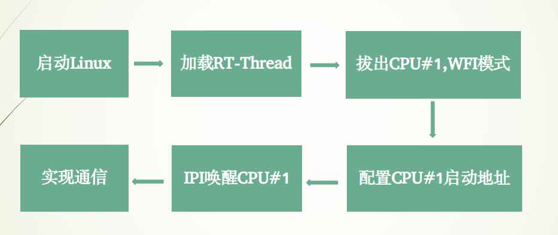
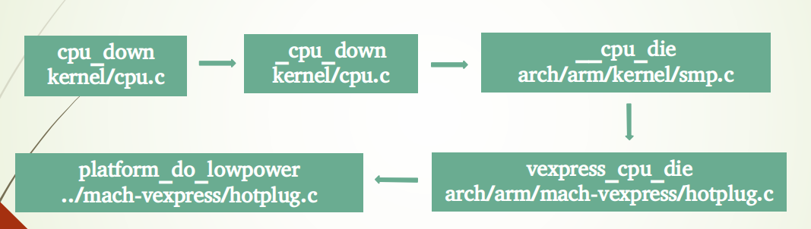
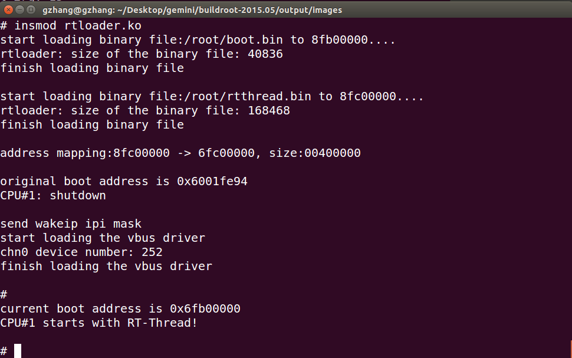

一、背景知识
IPI中断机制
多核多线程处理器的中断由 PIC(Programmable Interrupt Controller）统一控制，PIC 允许一个硬件线程中断其他的硬件线程，这种方式被称为核间中断(Inter-Processor Interrupts，IPI）。
PIC 拥有一个宽度为 32 位的核间中断寄存器IPIBase，该寄存器包含目的线程的编号、中断向量及中断类型(是否中断多个硬件线程）等内容。核间中断可以通过向这个寄存器写入需要的值来产生。若硬件线程A想要发送一个核间中断给硬件线程B，它只需要向寄存器IPIBase中写入B的Thread ID、中断向量、中断类型等值就可以了，PIC会通知B所在的核挂起它当前的执行序列，并根据中断向量跳转到中断服务例程ISR的入口。
使用IPI进行核间通信的关键在于要利用中断服务例程ISR去读取一个事先约好的共享内存区域。发起方首先将消息写到一块共享内存中，然后发起核间中断。被中断的硬件线程在中断服务例程中读取该内存，以获得发起方通知的消息。为防止多核间的竞争导致消息被改写，使用这种方式必须利用锁机制来确保消息的完整性。
WFI和WFE模式
WFI 表示 Wait for Interrupt（等待中断） ， WFE 表示 Wait for Event（等待事件）， 这两个指令允许处理器进入低功耗模式和停止执行代码。
Buildroot开发环境
Buildroot 是嵌入式开发领域中一个成套的嵌入式开发环境， 通过交叉编译，Buildroot 大大简化了制作一个完整的嵌入式 linux 开发系统的流程。Buildroot 可以生成交叉编译工具链、 根文件系统、 linux 内核镜像以及buildloader 等，当然也可以独立生成其中某些组合项， 比如你可以利用现有的交叉编译工具制作你自己的根文件系统。 此外， buildroot 支持 Power PC、 MIPS、ARM 等硬件平台， 在嵌入式领域应用非常广泛。
二、系统架构
如上图所示，Linux启动时占用两个处理器，然后采用hotplug技术拔掉CPU#1，重新配置CPU#1启动地址，加载并启动RT-Thread，两个系统独立运行在自己的处理器上，通过VBus进行通信。
三、内存分配
双核双系统内存分配如上图，基于qemu仿真器模拟运行。总共分配256M内存空间，其中248M分配给Linux，顶端4M作为RT-Thread的可执行空间，也是RT-Thread的加载位置。与RT-Thread相邻的1M空间用于加载boot.bin，这个文件用于启动RT-Thread，类似于bootloader，临近Linux的2M空间作为VBus通信的共享内存空间。此外，图中还给出了物理地址和虚拟地址之间的1:1映射关系。
四、基本流程

双系统基本操作流程如上图，详细介绍如下：
启动Linux
采用SMP方式，启动Linux，并占用两个处理器加载RT-Thread
将boot.bin和rtthread.bin分别加载到预先指定指定位置0x6fb0 0000、0x6fc 0000，实际上是加载到对应的虚拟地址空间0x8fb0 0000、0x8fc 0000拔出CPU#1进入WFI模式
通过hotplug技术，调用API 唤醒cpu_down，拔除CPU#1，使其进入低功耗模式配置CPU#1启动地址
设置CPU#1的启动地址为0x6fb0 0000发送IPI中断，唤醒CPU#1
从CPU#0发送一个IPI中断到CPU#1，唤醒CPU#1，启动RT-Thread双系统之间通信
双系统之间通过VBus进行通信
五、Linux拔核
cpu_down的基本流程如上图，下面详细介绍cpu_down的基本流程:
“cpu_down” (in kernel/cpu.c)
- 调用cpu_maps_update_begin，设定 Mutex Lock “cpu_add_remove_lock”；
- 确认cpu_hotplug_disabled是否有被设定；
- 调用 _cpu_down(cpu, 0)；
- 调用cpu_maps_update_done，释放 Mutex Lock “cpu_add_remove_lock”。
“_cpu_down” (in kernel/cpu.c)
- 调用num_online_cpus，确认如果目前Online的处理器只有一个，直接返回错误；
- 调用cpu_online，如果该CPU并非Online状态，直接返回错误；
- 调用cpu_hotplug_begin，取得 Mutex Lock “cpu_hotplug.lock”；
- 调用cpu_notify，通过raw_notifier_call_chain，通知CPU Chain中的处理器，目前正在进行Online动作的处理器状态为”CPU_DOWN_PREPARE”；
- 调用函数__stop_machine；
- 通过BUG_ON(cpu_online(cpu))，确认要停止的处理器，是否已经处于Offline的状态，若还是在Online状态就会导致Kernel Panic；
- 调用函数idle_cpu (in kernel/shced.c)，确认要Offline处理器是否正在执行idle task.若该处理器不是正在执行Idle Task，就会调用cpu_relax，直到确认要Offline的处理器是处于Idle Task中；
- 调用__cpu_die(cpu)；
- 调用cpu_notify_nofail，通知完成Offline动作的处理器状态为”CPU_DEAD”；
- 调用check_for_tasks，确认目前是否还有Tasks在被停止的处理器上，若有就会Printk出警告讯息；
- 调用cpu_hotplug_done，设定Active Write为NULL，释放 Mutex Lock “cpu_hotplug.lock”。
“__cpu_die” (in arch/arm/kernel/smp.c)
- 执行函数wait_for_completion_timeout，等待函数cpu_die 通过函数complete设定”Completion”给 cpu_died物件，如果cpu_died物件有设定完成或是TimeOut就会继续往后执行；
- 调用platform_cpu_kill。
”vexprss_cpu_die”(in arch/arm/mach-vexpress/hotplug.c)
- CPU Idle Task在执行cpu_die后，就会进入函数platform_cpu_die，并通过platform_do_lowpower，让处理器处于WFI Low Power的状态，等待下一次的唤醒。若处理器重新被唤醒，就会执行函数secondary_start_kernel (in arch/arm/kernel/smp.c)，重新执行初始化流程。
下面简单介绍一下拔核的一种实现方式，添加Linux内核驱动模块：1
2
3
4
5
6
7
8
9
10
11
12
13
14
15
16
17
18
19
static int __init unplug_init(void)
{
int ret;
ret = cpu_down(1);
if (ret && (ret != -EBUSY)) {
pr_err("Can't release cpu1: %d\n", ret);
return -ENOMEM;
}
return 0;
}
static void __exit unplug_exit(void){}
module_init(unplug_init);
module_exit(unplug_exit);
上面代码即为Linux添加一个简单的内核驱动模块，实现拔核功能。类似于C++面向对象编程中类的实现，编写内核驱动模块代码也需要编写”构造函数”、”析构函数”，cpu_down的调用即在”构造函数”中完成，当加载unplug模块的同时，也完成了拔核。
编译命令1
make -C $KDIR M=$PWD ARCH=arm
其中 \$KDIR 为Linux源码根目录，\$PWD为驱动模块根目录，在驱动模块根目录下执行这条命令即可，参数的含义请自行google。
六、VBus通信
双核双系统的VBus通信组件如上图所示，VBus是建立在环形缓冲区上的一个组件，用于高效的进行系统间通讯，具有如下特点:
- 支持QoS机制，保证关键数据及时送达
- 支持多路复用，可以在一条VBus上实现多种功能
- 直接使用设备接口和文件接口，方便易用
- Linux侧支持用户态驱动程序，可靠性高
根据VBus的特点可知，Linux用户态程序可以像操作普通文件一样来通过VBus来进行通讯，支持常规的open/read/write/close等基本操作，RT-Thread程序可以像操作普通设备一样通过VBus来通讯，包括rt_device{open/read/write/close}等操作。
最后，给出VBus的基本实现原理，如上图，感兴趣的话可以进一步学习。
七、测试运行
运行Linux
1 | qemu-system-arm \ |
基本参数和Linux方针运行类似，注意最后两项，分别将Linux和RT-Thread重定向到标准输入输出、telnet服务器。
运行RT-Thread
1 | telnet 127.0.0.1 1200 |
运行结果
启动Linux
查看CPU运行情况
加载rtloader模块
查看CPU运行情况
加载过程  由上图可见双核上系统的基本启动流程，首先分别加载boot.bin和rtthread.bin到指定物理位置，然后调用cpu_down拔除CPU#1，配置好启动地址后，发送IPI中断唤醒CPU#1，同时为Linux加载VBus driver，最终成功启动双核双系统。
通信测试 核间通信功能：Linux发送一个字符串，可有空格分隔符，RT-Thread收到后反序回写，Linux端收到处理结果并打印。